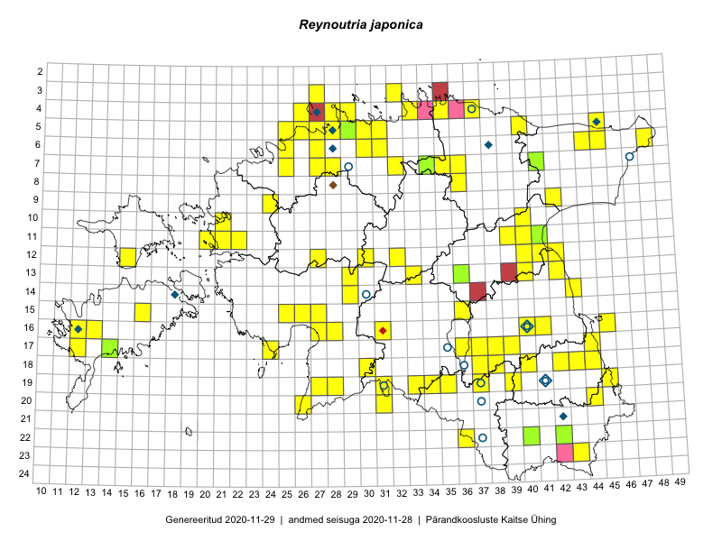

Reynoutria japonica
Uuendatud: 2016-12-07
Kaardile koondatud taksonid: Reynoutria japonica Houtt.

Kaart põhineb 126 kirjel, neist vaatlusi 122 ja eksemplare 4. Taksonit on leitud 69 ruudust.
| Ruut | Vaatleja(d) | Vaatlusaeg | Kirje tüüp | Viide andmebaasikirjele |
|---|---|---|---|---|
| 06-27 | Toomas Kukk | 2015-06-19 | punkt | vaata PlutoFis |
| 10-40 | Toomas Kukk, Raivo Kalle | 2015-05-12 | ruut/ala | vaata PlutoFis |
| 17-39 | Peedu Saar, Thea Kull | 2015-06-17 | punkt | vaata PlutoFis |
| 16-41 | Peedu Saar, Eerik Leibak | 2015-07-30 | punkt | vaata PlutoFis |
| 16-41 | Peedu Saar, Eerik Leibak | 2015-07-30 | ruut/ala | vaata PlutoFis |
| 23-43 | Ott Luuk, Peedu Saar | 2015-08-12 | ruut/ala | vaata PlutoFis |
| 16-45 | Toomas Kukk, Eerik Leibak | 2015-07-29 | ruut/ala | vaata PlutoFis |
| 23-43 | Ott Luuk, Peedu Saar | 2015-08-12 | punkt | vaata PlutoFis |
| 18-40 | Malle Leht | 2015-07-25 | ruut/ala | vaata PlutoFis |
| 16-45 | Toomas Kukk, Eerik Leibak | 2015-07-29 | punkt | vaata PlutoFis |
| Malle Leht | 2015-07-08 | ruut/ala | vaata PlutoFis | |
| 07-41 | Tiit Hallikma, Toomas Kukk | 2015-07-23 | ruut/ala | vaata PlutoFis |
| 06-31 | Rein Kalamees, Kersti Püssa | 2015-09-13 | ruut/ala | vaata PlutoFis |
| 06-31 | Rein Kalamees, Kersti Püssa | 2015-09-13 | punkt | vaata PlutoFis |
| 06-48 | Ott Luuk, Hannes Pehlak | 2015-07-21 | punkt | vaata PlutoFis |
| 17-39 | Thea Kull, Peedu Saar | 2015-06-17 | ruut/ala | vaata PlutoFis |
| 14-43 | Thea Kull, Eerik Leibak | 2015-07-06 | ruut/ala | vaata PlutoFis |
| 14-43 | Thea Kull, Eerik Leibak | 2015-07-06 | punkt | vaata PlutoFis |
| 06-45 | Thea Kull, Eerik Leibak | 2015-07-20 | ruut/ala | vaata PlutoFis |
| 07-34 | Jana-Maria Habicht, Ester Valdvee | 2015-07-20 | ruut/ala | vaata PlutoFis |
| 13-42 | Thea Kull, Meeli Mesipuu | 2015-08-14 | punkt | vaata PlutoFis |
| 11-39 | Ulvi Selgis | 2015-09-23 | punkt | vaata PlutoFis |
| 11-40 | Ulvi Selgis | 2015-09-23 | punkt | vaata PlutoFis |
| 15-25 | Maret Gerz, Leena Gerz | 2015-08-08 | ruut/ala | vaata PlutoFis |
| 15-25 | Maret Gerz, Leena Gerz | 2015-08-08 | punkt | vaata PlutoFis |
| 17-12 | Mari Reitalu | 2015-08-25 | ruut/ala | vaata PlutoFis |
| 18-30 | Ulvi Selgis | 2015-08-30 | punkt | vaata PlutoFis |
| 16-12 | Mari Reitalu | 2015-06-16 | ruut/ala | vaata PlutoFis |
| 17-12 | Mari Reitalu | 2015-06-26 | ruut/ala | vaata PlutoFis |
| 17-12 | Mari Reitalu | 2015-06-26 | punkt | vaata PlutoFis |
| 14-29 | Liina Oja, Ott Luuk | 2015-05-10 | punkt | vaata PlutoFis |
| 19-39 | Karin Kikas, Elle Rajandu | 2015-05-15 | punkt | vaata PlutoFis |
| 18-42 | Kirsi Loide, Marje Loide | 2015-07-28 | ruut/ala | vaata PlutoFis |
| 18-37 | Helle Mäemets, Mare Leis | 2015-06-22 | ruut/ala | vaata PlutoFis |
| 18-37 | Helle Mäemets, Mare Leis | 2015-06-22 | punkt | vaata PlutoFis |
| 05-25 | Mari Metsoja, Jaak-Albert Metsoja | 2015-07-30 | ruut/ala | vaata PlutoFis |
| 06-25 | Mari Metsoja, Jaak-Albert Metsoja | 2015-07-25 | ruut/ala | vaata PlutoFis |
| 15-16 | Karin Kikas, Elle Rajandu | 2015-07-23 | ruut/ala | vaata PlutoFis |
| 20-31 | Ott Luuk, Indrek Tammekänd | 2015-05-22 | punkt | vaata PlutoFis |
| 05-29 | Peedu Saar, Sander Laherand | 2013-07-07 | ruut/ala | vaata PlutoFis |
| 16-31 | Toomas Kukk, Eerik Leibak | 2016-04-28 | punkt | vaata PlutoFis |
| 18-37 | Helle Mäemets, Mare Leis | 2015-06-22 | punkt | vaata PlutoFis |
| 18-37 | Helle Mäemets | 2015-07-12 | punkt | vaata PlutoFis |
| 17-36 | Tiit Hallikma, Ott Luuk | 2016-04-25 | punkt | vaata PlutoFis |
| 17-36 | Tiit Hallikma, Ott Luuk | 2016-04-25 | punkt | vaata PlutoFis |
| 19-37 | Tiit Hallikma, Ott Luuk | 2016-04-25 | punkt | vaata PlutoFis |
| 05-40 | Tiit Hallikma, Ott Luuk | 2016-05-20 | punkt | vaata PlutoFis |
| 06-27 | Toomas Kukk | 2016-06-06 | ruut/ala | vaata PlutoFis |
| 06-27 | Toomas Kukk | 2016-06-06 | punkt | vaata PlutoFis |
| 22-42 | Toomas Kukk, Tiit Hallikma, Johannes Kõdar | 2016-06-15 | ruut/ala | vaata PlutoFis |
| 19-45 | Toomas Kukk, Tiit Hallikma | 2016-06-17 | ruut/ala | vaata PlutoFis |
| 11-40 | Eeva-Maria Jeletsky, Tarmo Niitla | 2016-06-05 | ruut/ala | vaata PlutoFis |
| 11-40 | Eeva-Maria Jeletsky, Tarmo Niitla | 2016-06-05 | punkt | vaata PlutoFis |
| 11-41 | Eeva-Maria Jeletsky, Tarmo Niitla | 2016-06-05 | ruut/ala | vaata PlutoFis |
| 11-41 | Eeva-Maria Jeletsky, Tarmo Niitla | 2016-06-05 | punkt | vaata PlutoFis |
| 12-42 | Eeva-Maria Jeletsky, Tarmo Niitla | 2016-06-04 | ruut/ala | vaata PlutoFis |
| 12-42 | Eeva-Maria Jeletsky, Tarmo Niitla | 2016-06-04 | punkt | vaata PlutoFis |
| 19-34 | Silvia Pihu, Illi Tarmu | 2015-07-11 | punkt | vaata PlutoFis |
| 19-34 | Silvia Pihu, Illi Tarmu | 2015-07-11 | punkt | vaata PlutoFis |
| 19-28 | Peedu Saar, Ott Luuk | 2016-06-09 | punkt | vaata PlutoFis |
| 19-37 | Liina Oja, Maret Gerz | 2016-06-17 | punkt | vaata PlutoFis |
| 19-37 | Maret Gerz, Liina Oja | 2016-06-16 | ruut/ala | vaata PlutoFis |
| 18-44 | Maret Gerz, Liina Oja | 2016-06-17 | ruut/ala | vaata PlutoFis |
| 18-44 | Maret Gerz, Liina Oja | 2016-06-17 | punkt | vaata PlutoFis |
| 18-43 | Maret Gerz, Liina Oja | 2016-06-17 | punkt | vaata PlutoFis |
| 05-26 | Tiina Elvisto, Eerik Leibak | 2016-07-04 | ruut/ala | vaata PlutoFis |
| 15-36 | Helle Mäemets, Mare Leis, Jaak-Albert Metsoja | 2015-07-05 | punkt | vaata PlutoFis |
| 05-26 | Tiina Elvisto, Eerik Leibak | 2016-07-04 | punkt | vaata PlutoFis |
| 13-40 | Ulvi Selgis | 2016-07-03 | ruut/ala | vaata PlutoFis |
| 05-30 | Sander Laherand, Eerik Leibak | 2016-07-29 | ruut/ala | vaata PlutoFis |
| 07-35 | Sander Laherand, Toomas Kukk, Nele Jõessar | 2016-07-27 | punkt | vaata PlutoFis |
| 09-42 | Ott Luuk, Eerik Leibak | 2016-08-05 | ruut/ala | vaata PlutoFis |
| 17-37 | Rein Kalamees, Kersti Püssa | 2016-07-20 | punkt | vaata PlutoFis |
| 17-36 | Rein Kalamees, Kersti Püssa | 2016-07-20 | punkt | vaata PlutoFis |
| 04-37 | Thea Kull, Eerik Leibak, Susanna Vain | 2016-07-26 | ruut/ala | vaata PlutoFis |
| 17-14 | Toomas Kukk, Meeli Mesipuu, Johannes Kõdar | 2016-08-11 | ruut/ala | vaata PlutoFis |
| 11-21 | Maret Gerz, Aat Sarv | 2016-07-07 | punkt | vaata PlutoFis |
| 05-30 | Sander Laherand, Eerik Leibak | 2016-07-29 | punkt | vaata PlutoFis |
| 12-32 | Susanna Vain, Thea Kull, Raivo Kalle | 2016-07-21 | punkt | vaata PlutoFis |
| 04-28 | Sander Laherand, Tõnu Ploompuu, Nele Jõessar | 2016-07-25 | punkt | vaata PlutoFis |
| 05-29 | Toomas Kukk, Sander Laherand | 2016-08-29 | ruut/ala | vaata PlutoFis |
| 06-30 | Toomas Kukk, Sander Laherand | 2016-08-30 | ruut/ala | vaata PlutoFis |
| 04-28 | Sander Laherand, Tõnu Ploompuu, Nele Jõessar | 2016-07-25 | ruut/ala | vaata PlutoFis |
| 04-37 | Susanna Vain, Eerik Leibak, Thea Kull | 2016-07-26 | punkt | vaata PlutoFis |
| 19-33 | Liina Oja, Elle Rajandu | 2016-07-18 | punkt | vaata PlutoFis |
| 19-35 | Sirje Azarov, Peedu Saar | 2016-07-19 | ruut/ala | vaata PlutoFis |
| 05-31 | Toomas Kukk, Sander Laherand | 2016-08-30 | punkt | vaata PlutoFis |
| 07-35 | Toomas Kukk, Sander Laherand, Nele Jõessar | 2016-07-27 | ruut/ala | vaata PlutoFis |
| 04-29 | Sander Laherand, Tõnu Ploompuu, Nele Jõessar | 2016-07-25 | ruut/ala | vaata PlutoFis |
| 06-30 | Sander Laherand, Toomas Kukk | 2016-08-30 | punkt | vaata PlutoFis |
| 19-45 | Tiit Hallikma, Toomas Kukk | 2016-06-17 | punkt | vaata PlutoFis |
| 07-32 | Peedu Saar, Ott Luuk | 2016-09-28 | ruut/ala | vaata PlutoFis |
| 17-44 | Peedu Saar | 2016-08-24 | ruut/ala | vaata PlutoFis |
| 17-44 | Peedu Saar | 2016-08-24 | punkt | vaata PlutoFis |
| 04-35 | Tõnu Ploompuu | 2016-07-16 | ruut/ala | vaata PlutoFis |
| 04-35 | Tõnu Ploompuu | 2016-07-16 | punkt | vaata PlutoFis |
| 04-35 | Tõnu Ploompuu | 2016-07-16 | punkt | vaata PlutoFis |
| 07-32 | Ott Luuk, Peedu Saar | 2016-09-28 | punkt | vaata PlutoFis |
| 05-29 | Sander Laherand, Toomas Kukk | 2016-09-29 | punkt | vaata PlutoFis |
| 04-28 | Sander Laherand, Tõnu Ploompuu, Nele Jõessar | 2016-07-25 | punkt | vaata PlutoFis |
| 04-29 | Sander Laherand, Tõnu Ploompuu, Nele Jõessar | 2016-07-25 | punkt | vaata PlutoFis |
| 04-29 | Sander Laherand, Tõnu Ploompuu, Nele Jõessar | 2016-07-25 | punkt | vaata PlutoFis |
| 16-13 | Toomas Kukk, Meeli Mesipuu | 2016-10-05 | ruut/ala | vaata PlutoFis |
| 20-31 | Peedu Saar, Ott Luuk | 2016-10-06 | punkt | vaata PlutoFis |
| 19-35 | Peedu Saar, Sirje Azarov | 2016-07-19 | punkt | vaata PlutoFis |
| 04-29 | Sander Laherand, Nele Jõessar, Tõnu Ploompuu | 2016-07-25 | punkt | vaata PlutoFis |
| 18-38 | Ott Luuk, Thea Kull | 2016-08-23 | punkt | vaata PlutoFis |
| 05-28 | Kadi-Liis Kesler, Tiina Elvisto | 2015-05-12 | ruut/ala | vaata PlutoFis |
| 22-42 | Tiit Hallikma, Toomas Kukk, Johannes Kõdar | 2016-06-15 | punkt | vaata PlutoFis |
| 05-26 | Kadi-Liis Kesler | 2015-05-31 | ruut/ala | vaata PlutoFis |
| 13-33 | Ott Luuk, Indrek Tammekänd | 2016-07-21 | ruut/ala | vaata PlutoFis |
| 15-26 | Kadi-Liis Kesler, Tiina Elvisto | 2015-07-28 | ruut/ala | vaata PlutoFis |
| 15-27 | Kadi-Liis Kesler, Tiina Elvisto | 2015-07-28 | ruut/ala | vaata PlutoFis |
| 05-29 | Kadi-Liis Kesler | 2015-05-12 | ruut/ala | vaata PlutoFis |
| 06-30 | Kadi-Liis Kesler, Tiina Elvisto | 2015-05-26 | ruut/ala | vaata PlutoFis |
| 04-29 | Kadi-Liis Kesler, Tiina Elvisto | 2015-08-12 | ruut/ala | vaata PlutoFis |
| 17-14 | Meeli Mesipuu, Toomas Kukk, Johannes Kõdar | 2016-08-11 | punkt | vaata PlutoFis |
| 16-13 | Meeli Mesipuu, Toomas Kukk | 2016-10-05 | punkt | vaata PlutoFis |
| 09-42 | Ott Luuk, Eerik Leibak | 2016-08-05 | punkt | vaata PlutoFis |
| 09-24 | Jaak-Albert Metsoja, Mari Metsoja | 2016-07-08 | ruut/ala | vaata PlutoFis |
| 12-27 | Jaak-Albert Metsoja, Mari Metsoja | 2016-07-05 | ruut/ala | vaata PlutoFis |
| 12-27 | Jaak-Albert Metsoja, Mari Metsoja | 2016-07-05 | punkt | vaata PlutoFis |
| 07-34 | Jana-Maria Habicht | 2015-07-20 | eksemplar | vaata PlutoFis |
| 07-34 | Jana-Maria Habicht | 2015-07-20 | eksemplar | vaata PlutoFis |
| 22-42 | Ott Luuk | 2012-09-14 | eksemplar | vaata PlutoFis |
| 17-14 | Raivo Kalle | 2016-08-02 | eksemplar | vaata PlutoFis |